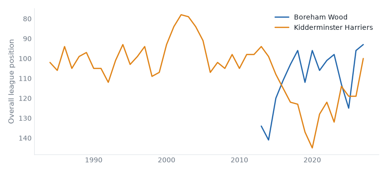
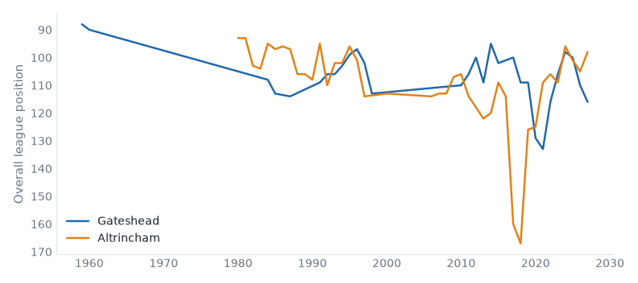

League One, League Two and the National League, 29 September to 05 October 2026. 34 results.Friday's preview.
Southend 3–1 Fylde. Friday's case: 2 below level, above level, neighbours, yo-yo club. Southend stay 3rd; Fylde down from 5th to 7th.
Burton 1–3 Huddersfield. Friday's case: fallen giant, below level, above level, neighbours, yo-yo club. Burton down from 7th to 8th; Huddersfield up from 6th to 3rd.
Chesterfield 4–2 Tranmere. Friday's case: below level, neighbours, yo-yo club. Chesterfield up from 11th to 8th; Tranmere down from 10th to 12th.
Aldershot 1–3 Carlisle. Friday's case: fallen giant, 2 below level, yo-yo club. Aldershot down from 7th to 10th; Carlisle up from 16th to 14th.
Harrogate 3–0 Hornchurch. Friday's case: 2 above level, relegated last season. Harrogate stay 2nd; Hornchurch down from 10th to 12th.
Kidderminster 1–1 Sutton. Friday's case: above level, neighbours. Kidderminster up from 9th to 8th; Sutton stay 11th.
Exeter 1–0 Rotherham. Friday's case: below level, yo-yo club, relegated last season. Exeter up from 21st to 20th; Rotherham down from 13th to 17th.
Grimsby 1–2 Shrewsbury. Friday's case: below level, yo-yo club. Grimsby down from 6th to 9th; Shrewsbury up from 18th to 14th.
Hartlepool 0–1 Tamworth. Friday's case: below level, neighbours. Hartlepool stay 22nd; Tamworth up from 20th to 18th.
Gateshead 1–2 Worthing. Friday's case: 2 above level. Gateshead stay 24th; Worthing up from 8th to 5th.
Boreham Wood 3–1 Kidderminster compare
National League, Tue 29 Sep
Boreham Wood have 29 points from 11 games, their best start in their record.

Gateshead 0–1 Altrincham compare
National League, Tue 29 Sep
Gateshead have 4 points from 11 games, their worst start in their record.

Boreham Wood 3–1 Altrincham compare
National League, Sat 03 Oct
Boreham Wood have 32 points from 12 games, their best start in their record.
Gateshead 1–2 Worthing compare
National League, Sat 03 Oct
Gateshead have 4 points from 12 games, their worst start in their record.
Solihull 0–2 Halifax compare
National League, Sat 03 Oct
Solihull Moors have 7 points from 12 games, their worst start in their record.
Hornchurch 2–1 Aldershot compare
National League, Tue 29 Sep
Hornchurch have 18 points from 11 games, their best start since 2013/14.
Eastleigh 1–1 Southend compare
National League, Wed 30 Sep
Southend United have 21 points from 11 games, their best start since 2011/12.
Burton 1–3 Huddersfield compare
League One, Sat 03 Oct
Huddersfield Town beat Burton Albion for the first time since 2016/17.
Crewe 3–1 Bristol Rvs compare
League Two, Sat 03 Oct
Bristol Rovers have 15 points from 9 games, their best start since 2009/10.
Grimsby 1–2 Shrewsbury compare
League Two, Sat 03 Oct
Shrewsbury Town beat Grimsby Town for the first time since 2007/08.
Barrow 2–1 Wealdstone compare
National League, Sat 03 Oct
Barrow beat Wealdstone for the first time since 1984/85.
Harrogate 3–0 Hornchurch compare
National League, Sat 03 Oct
Hornchurch have 18 points from 12 games, their best start since 2013/14.
Southend 3–1 Fylde compare
National League, Sat 03 Oct
Southend United have 24 points from 12 games, their best start since 2011/12.
Yeovil 6–0 Boston Utd compare
National League, Sat 03 Oct
Boston United's 0-6 defeat by Yeovil Town was their heaviest since 2016/17.
| Sat 03 | Burton | 1–3 | Huddersfield | ↓1 ↑3 | compare | first win v Burton Albion since 2016/17 |
| Sat 03 | Leyton Orient | 0–2 | Plymouth | ↑3 | compare | |
| Sat 03 | Reading | 1–1 | Bradford | ↑2 ↓1 | compare |
| P | W | D | L | GD | Pts | ||
|---|---|---|---|---|---|---|---|
| 1 | Plymouth Argyle | 6 | 4 | 0 | 2 | +5 | 12 |
| 2 | Reading | 6 | 3 | 2 | 1 | +8 | 11 |
| 3 | Oxford United | 6 | 3 | 2 | 1 | +6 | 11 |
| 4 | Sheffield Wednesday | 6 | 3 | 2 | 1 | +6 | 11 |
| 5 | Huddersfield Town | 6 | 3 | 2 | 1 | +4 | 11 |
| 6 | AFC Wimbledon | 6 | 3 | 2 | 1 | +1 | 11 |
| 7 | Stockport County | 6 | 3 | 1 | 2 | +6 | 10 |
| 8 | Bradford City | 6 | 3 | 1 | 2 | 0 | 10 |
| 9 | Cambridge United | 6 | 2 | 3 | 1 | +1 | 9 |
| 10 | Stevenage | 6 | 2 | 2 | 2 | +3 | 8 |
| 11 | Burton Albion | 6 | 2 | 2 | 2 | -1 | 8 |
| 12 | Leicester City | 6 | 2 | 2 | 2 | -2 | 8 |
| 13 | Wycombe Wanderers | 6 | 2 | 2 | 2 | -3 | 8 |
| 14 | Barnsley | 6 | 2 | 2 | 2 | -4 | 8 |
| 15 | Leyton Orient | 6 | 2 | 1 | 3 | +1 | 7 |
| 16 | Blackpool | 6 | 2 | 1 | 3 | 0 | 7 |
| 17 | Doncaster Rovers | 6 | 1 | 3 | 2 | 0 | 6 |
| 18 | Notts County | 6 | 1 | 3 | 2 | -2 | 6 |
| 19 | MK Dons | 6 | 0 | 5 | 1 | -2 | 5 |
| 20 | Luton Town | 6 | 1 | 2 | 3 | -3 | 5 |
| 21 | Mansfield Town | 6 | 1 | 2 | 3 | -4 | 5 |
| 22 | Bromley | 6 | 1 | 2 | 3 | -11 | 5 |
| 23 | Wigan Athletic | 6 | 1 | 1 | 4 | -6 | 4 |
| 24 | Peterborough United | 6 | 0 | 2 | 4 | -8 | 2 |
| Sat 03 | Accrington | 2–0 | Cheltenham | ↑3 ↓2 | compare | best start since 2020/21 |
| Sat 03 | Chesterfield | 4–2 | Tranmere | ↑3 ↓2 | compare | |
| Sat 03 | Crewe | 3–1 | Bristol Rvs | ↑6 ↓2 | compare | best start since 2009/10 |
| Sat 03 | Exeter | 1–0 | Rotherham | ↑1 ↓4 | compare | |
| Sat 03 | Gillingham | 0–0 | Newport County | ↓2 ↑2 | compare | |
| Sat 03 | Grimsby | 1–2 | Shrewsbury | ↓3 ↑4 | compare | first win v Grimsby Town since 2007/08 |
| Sat 03 | Rochdale | 1–0 | Swindon | ↑5 ↓1 | compare | first win v Swindon Town since 2020/21 |
| Sat 03 | Salford | 1–0 | Fleetwood Town | ↑6 ↓4 | compare |
| P | W | D | L | GD | Pts | ||
|---|---|---|---|---|---|---|---|
| 1 | Salford City | 6 | 5 | 1 | 0 | +7 | 16 |
| 2 | Rochdale | 6 | 4 | 1 | 1 | +4 | 13 |
| 3 | Barnet | 6 | 3 | 3 | 0 | +5 | 12 |
| 4 | Gillingham | 6 | 3 | 2 | 1 | +5 | 11 |
| 5 | Chesterfield | 6 | 3 | 2 | 1 | +4 | 11 |
| 6 | Cheltenham Town | 6 | 3 | 2 | 1 | +2 | 11 |
| 7 | York City | 6 | 3 | 1 | 2 | +5 | 10 |
| 8 | Walsall | 6 | 2 | 4 | 0 | +3 | 10 |
| 9 | Accrington Stanley | 6 | 2 | 3 | 1 | +2 | 9 |
| 10 | Bristol Rovers | 6 | 3 | 0 | 3 | -3 | 9 |
| 11 | Crewe Alexandra | 6 | 1 | 5 | 0 | +2 | 8 |
| 12 | Grimsby Town | 6 | 2 | 2 | 2 | +2 | 8 |
| 13 | Shrewsbury Town | 6 | 2 | 2 | 2 | -2 | 8 |
| 14 | Swindon Town | 6 | 2 | 1 | 3 | -2 | 7 |
| 15 | Exeter City | 6 | 1 | 3 | 2 | -1 | 6 |
| 16 | Newport County | 6 | 1 | 3 | 2 | -1 | 6 |
| 17 | Rotherham United | 6 | 1 | 3 | 2 | -1 | 6 |
| 18 | Tranmere Rovers | 6 | 1 | 3 | 2 | -2 | 6 |
| 19 | Colchester United | 6 | 1 | 3 | 2 | -3 | 6 |
| 20 | Fleetwood Town | 6 | 1 | 2 | 3 | -2 | 5 |
| 21 | Northampton Town | 6 | 1 | 2 | 3 | -3 | 5 |
| 22 | Port Vale | 6 | 1 | 2 | 3 | -4 | 5 |
| 23 | Oldham Athletic | 6 | 1 | 1 | 4 | -5 | 4 |
| 24 | Crawley Town | 6 | 1 | 1 | 4 | -6 | 4 |
| Tue 29 | Barrow | 3–0 | Scunthorpe | ↑3 | compare | first win v Scunthorpe United since 2021/22 |
| Tue 29 | Boreham Wood | 3–1 | Kidderminster | ↑1 | compare | best start on record |
| Tue 29 | Forest Green | 1–1 | Wealdstone | ↓3 ↓2 | compare | |
| Tue 29 | Fylde | 0–2 | Carlisle | ↓2 ↑2 | compare | best start since 2018/19 |
| Tue 29 | Gateshead | 0–1 | Altrincham | ↓2 | compare | worst start on record |
| Tue 29 | Halifax | 1–1 | Boston Utd | ↑2 ↓1 | compare | |
| Tue 29 | Hartlepool | 0–1 | Harrogate | compare | 5 defeats, longest since 2021/22 | |
| Tue 29 | Hornchurch | 2–1 | Aldershot | ↓2 ↓3 | compare | best start since 2013/14 |
| Tue 29 | Woking | 2–4 | Solihull | ↑3 | compare | worst start since 2017/18 |
| Tue 29 | Yeovil | 1–1 | Worthing | ↑2 ↑3 | compare | 6 games unbeaten, longest since 2018/19 |
| Wed 30 | Eastleigh | 1–1 | Southend | ↓3 | compare | best start since 2011/12 |
| Wed 30 | Tamworth | 2–0 | Sutton | ↑2 | compare | best start since 2021/22 |
| Sat 03 | Aldershot | 1–3 | Carlisle | ↓3 ↑2 | compare | best start since 2017/18 |
| Sat 03 | Barrow | 2–1 | Wealdstone | ↑3 ↓2 | compare | first win v Wealdstone since 1984/85 |
| Sat 03 | Boreham Wood | 3–1 | Altrincham | ↓2 | compare | best start on record |
| Sat 03 | Eastleigh | 1–3 | Woking | ↓3 ↑3 | compare | |
| Sat 03 | Gateshead | 1–2 | Worthing | ↑3 | compare | worst start on record |
| Sat 03 | Harrogate | 3–0 | Hornchurch | ↓2 | compare | best start since 2013/14 |
| Sat 03 | Hartlepool | 0–1 | Tamworth | ↑2 | compare | 6 defeats, longest since 2018/19 |
| Sat 03 | Kidderminster | 1–1 | Sutton | ↑1 | compare | best start since 2018/19 |
| Sat 03 | Solihull | 0–2 | Halifax | ↑2 | compare | worst start on record |
| Sat 03 | Southend | 3–1 | Fylde | ↓2 | compare | best start since 2011/12 |
| Sat 03 | Yeovil | 6–0 | Boston Utd | ↑2 ↓1 | compare | heaviest defeat since 2016/17 |
| P | W | D | L | GD | Pts | ||
|---|---|---|---|---|---|---|---|
| 1 | Boreham Wood | 6 | 5 | 1 | 0 | +11 | 16 |
| 2 | Worthing | 6 | 4 | 2 | 0 | +5 | 14 |
| 3 | Barrow | 6 | 4 | 1 | 1 | +6 | 13 |
| 4 | Harrogate Town | 6 | 4 | 0 | 2 | +5 | 12 |
| 5 | Altrincham | 6 | 4 | 0 | 2 | 0 | 12 |
| 6 | Southend United | 6 | 3 | 2 | 1 | +7 | 11 |
| 7 | Woking | 6 | 3 | 2 | 1 | +7 | 11 |
| 8 | Yeovil Town | 6 | 3 | 2 | 1 | +7 | 11 |
| 9 | FC Halifax Town | 6 | 3 | 2 | 1 | +5 | 11 |
| 10 | Forest Green Rovers | 6 | 2 | 3 | 1 | +3 | 9 |
| 11 | AFC Fylde | 6 | 3 | 0 | 3 | 0 | 9 |
| 12 | Tamworth | 6 | 3 | 0 | 3 | -4 | 9 |
| 13 | Carlisle United | 6 | 2 | 2 | 2 | 0 | 8 |
| 14 | Kidderminster Harriers | 6 | 2 | 2 | 2 | 0 | 8 |
| 15 | Wealdstone | 6 | 2 | 1 | 3 | +3 | 7 |
| 16 | Aldershot Town | 6 | 2 | 1 | 3 | +1 | 7 |
| 17 | Scunthorpe United | 6 | 2 | 0 | 4 | -2 | 6 |
| 18 | Sutton United | 6 | 1 | 3 | 2 | -3 | 6 |
| 19 | Solihull Moors | 6 | 2 | 0 | 4 | -6 | 6 |
| 20 | Hornchurch | 6 | 2 | 0 | 4 | -8 | 6 |
| 21 | Eastleigh | 6 | 1 | 2 | 3 | -5 | 5 |
| 22 | Boston United | 6 | 1 | 2 | 3 | -7 | 5 |
| 23 | Hartlepool United | 6 | 0 | 0 | 6 | -10 | 0 |
| 24 | Gateshead | 6 | 0 | 0 | 6 | -16 | 0 |
Boreham Wood: 15 games unbeaten in a row, equalling their record (2019/20).
Hartlepool United: 6 defeats in a row; the record is 8 (1970/71).
Boreham Wood: 5 wins in a row; the record is 6 (2025/26).
Harrogate Town: 2 clean sheets in a row; the record is 4 (2015/16).
Built from the English football database, tiers 1–5 from 1958/59. Results from football-data.co.uk. Archived copy.